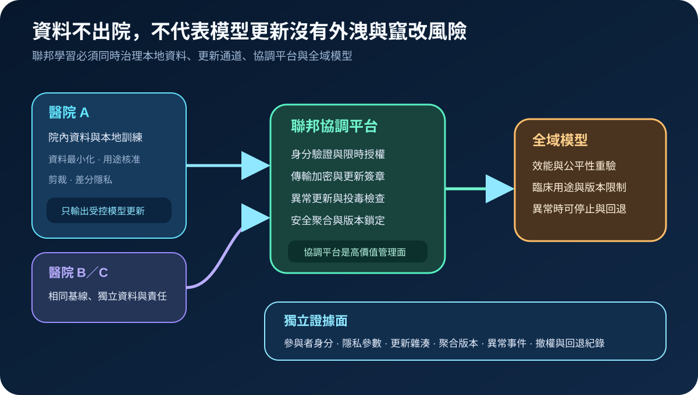
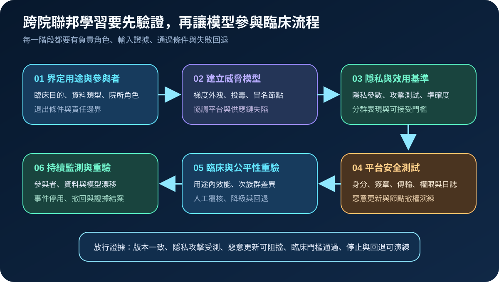
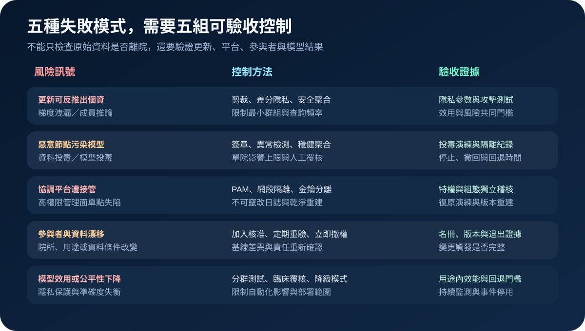

醫療資安國際觀察 · 2026-11-10
跨院聯邦學習如何證明資料、更新與模型都可信：從梯度隱私到聚合驗收
作者：Dr. William｜醫療資訊與資安治理實務工作者
跨院聯邦學習讓原始資料留在各院，但模型更新仍可能洩露特徵、遭惡意節點污染，協調平台也可能成為高權限攻擊面；安全驗收必須涵蓋隱私、完整性、參與者身分、平台管理面與臨床效用。
名詞解釋：本地訓練、模型更新與安全聚合
聯邦學習由多個參與者在本地資料上訓練，再送出參數或梯度更新，由協調平台聚合成全域模型。差分隱私以剪裁與受控雜訊降低單筆資料對輸出的可辨識性；安全聚合限制平台直接看見個別更新。兩者用途不同，也不能取代節點驗證、更新簽章、投毒偵測、權限治理與臨床驗證。
國際現況與適用邊界
NIST 於 2026 年 10 月公開 Privacy-Preserving Federated Learning 測試平台與策展資料集，讓組織以可重複方式比較隱私保護、模型效用與攻擊情境。ENISA 的 EUVD 於 2026 年 4 月收錄一項影響聯邦學習框架的命令注入漏洞，顯示協調軟體與管理 API 本身也需要弱點、權限與復原控制。英國 ICO 的 AI 資安與資料最小化指引則要求以風險為基礎評估訓練資料、模型與推論階段的安全及最小化措施。這些資料屬美國技術測試、歐盟漏洞資訊與英國資料保護指引，不是台灣醫院的法定條文。
台灣適用原則：可把國際方法轉成跨院合作契約、資料使用核准、平台採購、技術測試與模型放行條件；實際責任仍須依台灣個資、醫療、資安、研究倫理、院內 AI 治理與臨床程序界定。
規劃：先把用途、參與者與失敗條件寫清楚
治理範圍應列明臨床用途、資料類型、參與院所、協調者、平台供應商、模型版本、隱私參數、更新頻率、最小參與群組、加入與退出程序。驗收指標可包含參與者身分覆蓋率、更新簽章驗證率、隱私攻擊測試結果、投毒阻擋率、模型分群效能、異常停止時間、撤權完成時間及回退成功率。
實作：六階段形成可放行的證據鏈
- 界定用途：鎖定臨床問題、資料用途、角色與責任。
- 建立威脅模型：納入梯度外洩、成員推論、投毒、冒名節點及平台失陷。
- 設定基準：共同測量隱私參數、攻擊成功率、整體與次族群效用。
- 測試平台：驗證身分、簽章、傳輸、權限、日誌、惡意更新與節點撤權。
- 臨床重驗：確認用途內效能、公平性、人工覆核、降級與回退。
- 持續監測：參與者、資料分布、模型或平台版本改變時重新放行。

風險：把「資料不出院」當成安全結論
常見失敗包括只驗傳輸加密、未限制單一節點影響、協調平台與訓練節點共用高權限，以及隱私保護造成效用下降卻未重驗。控制重點是隱私與效用共同門檻、更新來源驗證、穩健聚合、管理面隔離、不可竄改日誌、參與者生命週期及可演練的停止與回退。

可執行清單
- 是否記錄每個參與院所、資料用途、模型版本與退出條件？
- 模型更新是否具身分驗證、簽章、加密、重放防護與版本鎖定？
- 是否測試梯度洩漏、成員推論、惡意更新與冒名節點？
- 協調平台是否使用獨立管理身分、PAM、網段隔離與外送日誌？
- 隱私保護後是否重驗整體與次族群的臨床效用？
- 節點、資料、模型或平台改變時，是否觸發撤權、停止、回退與重驗？
來源
- NIST｜Privacy-Preserving Federated Learning Testbed and Curated Dataset（發布：2026-10-29；查閱：2026-11-10）
- ENISA EUVD｜EUVD-2026-16818（發布：2026-04-27；查閱：2026-11-10）
- UK ICO｜How should we assess security and data minimisation in AI?（頁面未標示發布日；查閱：2026-11-10）
內容說明
本文依健康台灣深耕計畫相關治理內容整理，並參考 NIST、ENISA 與英國 ICO 官方資料，說明跨院聯邦學習的隱私、更新完整性、協調平台與臨床驗收；不把美國、歐盟或英國資料視為台灣醫療機構的法定義務，也不取代主管機關規範、研究倫理、個資影響評估、臨床驗證、契約審查或法律意見。